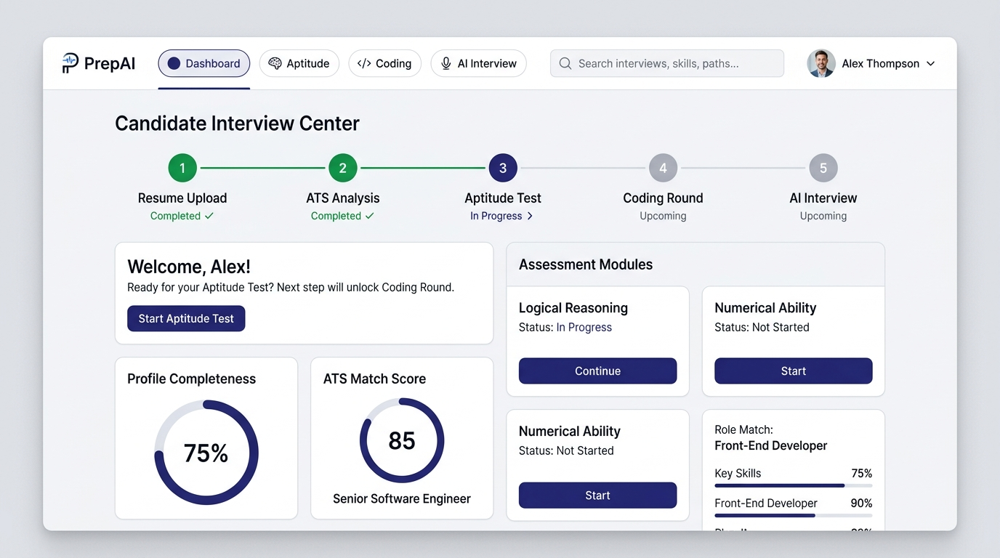

ATS resume parser
Extracts skills, education, and experience to score ATS compatibility and auto-detect the roles you match.
Powered by Google Gemini
Upload your resume and PrepAI builds the whole loop around it — ATS scoring, a timed aptitude exam, role-matched coding problems in a real IDE, and a recorded video interview that grades what you actually said.
No credit card required · Four rounds · Full diagnostic report

Each round unlocks the next, so your preparation follows the same order a real hiring loop does.
Gemini parses your skills, education, and projects, then scores ATS compatibility and detects your target role.
15 randomized questions across quantitative, logical, and verbal reasoning on a 15-minute timer. Pass mark is 60%.
Role-matched algorithm challenges in a real editor, executed against public and hidden test cases.
Record video answers to questions built from your resume, then read the evidence-based report.
Every stage of a technical loop, instrumented and scored.
Extracts skills, education, and experience to score ATS compatibility and auto-detect the roles you match.
A timed 15-minute exam drawn from a 100+ question bank across quantitative, logical, and verbal tiers.
Role-tailored problems in Python, C++, Java, and JavaScript with three public cases plus hidden evaluation cases.
Real-time speech recognition and synthesis, with a full transcript of every turn saved to your report.
Per-question grading with strengths, growth areas, and a recommended learning path — not just a number.
An admin dashboard for reviewing candidate results, ATS scores, and round-by-round progress, exportable to CSV.
Every round produces something concrete you can act on before the real interview.
The parser reads your PDF once and that result drives everything downstream — which coding problems you get and which questions the interviewer asks.
Problems are picked for your detected role and executed for real against public and hidden test cases — the same pass/fail signal an interviewer would see.
Answer out loud. The AI tracks how many of your responses were substantive, scores each one, and tells you exactly where the answer thinned out.
You can take the aptitude test without one, but the resume is what personalizes the rest of the pipeline. Without it, coding problems and interview questions fall back to a general Software Engineer track.
It is uploaded to your own account, parsed once to extract skills and education, and used only to generate your scores and questions. You can replace it at any time from your profile.
Python 3, C++ (GCC), Java, and JavaScript (Node.js). Each problem ships with a starter template per language, and your submission runs against both public and hidden test cases.
Yes — the interview is video-based. You record an answer to each question with your webcam and microphone, review it, and can re-record before submitting. Your speech is transcribed live, so use Chrome or Edge on desktop for the full experience.
Yes. Aptitude questions are drawn randomly from the bank each time, so retakes give you a fresh set rather than the same paper again.
Admin accounts get a portal listing every candidate with ATS score, round-by-round results, and a per-candidate detail view, exportable to CSV.
Run the full pipeline once and find out exactly where you stand before it counts.
Create your free account